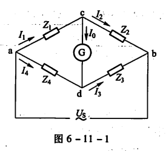
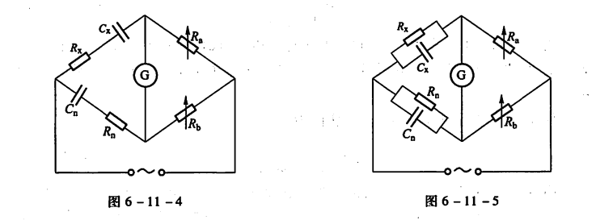
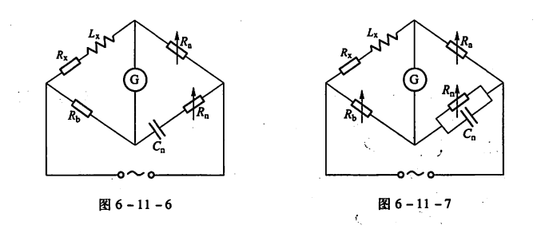

交流电桥¶
2024/10/30
一、实验综述¶
1、实验目的¶
- 了解交流电桥平衡原理，掌握交流电桥平衡条件；
- 掌握用交流电桥测量电容及介质损耗，电感及品质因素；
- 学会利用交流电桥设计出相关测量方案。
2、实验原理¶
-
交流电桥的平衡条件
如图6-11-1所示，我们在正弦稳态条件下讨论交流电桥的基本原理。在交流电桥中，4个桥臂均由阻抗元件构成，在电桥的一条对角线cd中接入检流计，在另一对角线中接入交流电源。
调节桥臂参数，使得检流计中无电流通过时，cd两点的电位相等，电桥达到平衡，这时有\(Z_1\cdot Z_3=Z_2\cdot Z_4\)，即相对桥臂阻抗乘积相等。
图1
考虑将标准元件\(Z_n\)和被测原件\(Z_x\)相邻放置或相对放置（\(Z_x\)为\(Z_4\),\(Z_n\)分别为\(Z_3\)和\(Z_2\)）由电桥平衡条件分别有\(Z_x=\frac{Z_1}{Z_2}\cdot Z_n\)和\(Z_x=\frac{Z_1Z_3}{Z_n}\)。
对于后一种情况，由于此时\(Z_1,Z_3\)为臂乘，又称为臂乘电桥，特点是\(Z_n\)和\(Z_x\)的阻抗性质必须相反，常用于使用标准电容测量电感。在实际测量中,为了使电桥的结构简单和调节方便,通常将其中的2个桥臂设计为纯电阻。在调节中，为了要使2个参量同时达到平衡，需要反复多次耐心 的调节，所以交流电桥的平衡要比直流电桥困难一些。 2. 电容电桥
电容电桥主要用于测量电容的电容量和损耗角。
电容器并非理想元件，存在着介质损耗，所以通过电容器的电流和它两端的电压之间的相位差并非90°，而是比90°要小一个角度\(\delta\)。这个角度\(\delta\)就称为损耗角。在等效电路中，理想电容表示实际电容的等效电容， 串联或者并联的等效电阻表示实际电容的发热损耗。为了方便起见，通常使用电容器的损耗角的正切值来表示它的介质损耗特性，用符号\(D\)表示，称之为损耗因数。
对于损耗较小的电容的电容电桥，我们采用串联电容电桥，如图6-11-4，当电桥平衡时，\(R_x=\frac{R_a}{R_b}R_n\)，\(C_x=\frac{R_b}{R_a}C_n\)，被测电容的损耗因数为\(D=tan\delta=\omega C_xR_x=\omega C_nR_n\)
对于损耗较大的电容的电容电桥，我们采用并联电容电桥，如图6-11-5，当电桥平衡时，\(R_x=\frac{R_a}{R_b}R_n\)，\(C_x=\frac{R_b}{R_a}C_n\)，被测电容的损耗因数为\(D=tan\delta=\frac{1}{\omega C_xR_x}=\frac{1}{\omega C_nR_n}\)
 3. 电感电桥
电感电桥是用来测量电感的，电感电桥有多种形式，通常采用的是标准电容作为与被测电感相比较的标准元件，由前面对电桥的平衡条件的分析可知，此时标准电容一定要和被测电感放置在相对的桥臂上。当然，根据实际测量的需要，也可以采用标准电感作为标准元件，此时标准电感和被测电感应放置在相邻的桥臂上。
一般的电感线圈都不是纯电感，除了电抗外，还有等效电阻，两者之比称为电感的品质因数\(Q\),即\(Q=\frac{\omega L}{R}\)。
对于高Q值电感，我们采用海氏电桥进行测量，如图6-11-6，电桥平衡时，根据平衡条件可得
\((R_x+j\omega L_x)(R_n+\frac{1}{j\omega C_n})=R_aR_b\)
整理后得\(L_x=R_aR_b\frac{C_n}{1+(\omega C_nR_n)^2}\),\(R_x=R_aR_b\frac{R_n\omega ^2C_n^2}{1+(\omega C_nR_n)^2}\)，其品质因数\(Q=\frac{\omega L_x}{R_x}=\frac{1}{\omega C_nR_n}\)
对于低Q值电感，我们采用麦克斯韦电桥进行测量，如图6-11-7，电桥平衡时，根据平衡条件可得
\((R_x+j\omega L_x)(\frac{1}{\frac{1}{R_n}+j\omega C_n})=R_aR_b\)
整理后得\(L_x=R_aR_bC_n\)，\(R_x=R_aR_b\frac{1}{R_n}\)，其品质因数\(Q=\frac{\omega L_x}{R_x}=\omega C_nR_n\)

二、实验内容¶
1、实验仪器¶
数字电桥，FB305型交流电桥实验仪
2、实验操作¶
- 分别取一组损耗因数相差较大的电容和品质因数相差较大的电感，调节并使用数字电桥测量相应的电容/电感值及损耗因数/品质因数大小，根据所测得值给对应电容/电感选择合适的测量电路；
- 设定实验仪输出频率为\(1000\)\(Hz\),电压大小为\(1\)\(V\)根据实验原理分别搭建相应的串联电容电桥、并联电容电桥、海氏电桥和麦克斯韦电桥，首先将检流计幅度调至最小根据公式及数据范围设定合适的\(R_a\)，\(C_n\),逐渐调大输出电压及检流计幅度，通过调节\(R_n\)，\(R_b\)使检V流计指针始终保持在零刻度线附近；当电压增大至\(3V\)左右时记录相应读数；
- 根据实验得到数据分别计算电容/电感的损耗因数/品质因数，与数字电桥测得的数值进行比较分析。
3、注意事项¶
- 桥臂尽量不要采用标准电感。由于制造工艺上的原因，标准电容的准确度要高于标准电感,并且标准电容不易受外磁场的影响。所以常用的交流电桥，无论是测量电容还是电感，除了被测元件之外，其他桥臂都采用标准电阻和标准电容。
- 桥臂配置时尽量使平衡条件和电源频率无关。这样做才能使得平衡条件更容易实现，并且受到的影响因素更少。有些电桥的平衡条件，会含有电源频率这个参量，这样就增加了实现平衡的难度。
三、实验数据¶
1、数据记录与处理¶
\(f=1000Hz\Rightarrow \omega=2\pi f=2000\pi Hz\)
-
低D值电容的测量
数字电桥测定值\(C_0=1025.13nF\)，\(D_0=0.0251\)
\(R_a/\Omega\) \(C_n/\mu F\) \(R_n/\Omega\) \(R_b/\Omega\) 10000 1 4.0 9956 \(R_x=\frac{R_a}{R_b}R_n=4.018\Omega\)
\(C_x=\frac{R_b}{R_a}C_n=995.6nF\)
\(\varepsilon_C=\frac{|C_x-C_0|}{C_0}\times 100\%=2.9\%\)
$D=\omega C_nR_n=0.002513 $
\(\varepsilon_{D}=\frac{|D-D_0|}{D_0}\times 100\%=0.12\%\) 2. 高D值电容的测量
数字电桥测定值\(C_0=9780.6nF\)，\(D_0=0.2356\)
\(R_a/\Omega\) \(C_n/\mu F\) \(R_n/\Omega\) \(R_b/\Omega\) 1000 1 700.0 9807 \(R_x=\frac{R_a}{R_b}R_n=71.38\Omega\)
\(C_x=\frac{R_b}{R_a}C_n=9807nF\)
\(\varepsilon_C=\frac{|C_x-C_0|}{C_0}\times 100\%=0.27\%\)
\(D=\frac{1}{\omega C_nR_n}=0.2274\)
\(\varepsilon_{D}=\frac{|D-D_0|}{D_0}\times100\%=3\%\) 3. 高Q值电感的测量
数字电桥测定值\(L_0=4.9776mH\)，\(Q_0=7.4487\)
\(R_a/\Omega\) \(C_n/\mu F\) \(R_n/\Omega\) \(R_b/\Omega\) 10 1 20.3 523 \(R_x=R_aR_b\frac{R_n\omega ^2C_n^2}{1+(\omega C_nR_n)^2}=4.12\Omega\)
\(L_x=R_aR_b\frac{C_n}{1+(\omega C_nR_n)^2}=5.14mH\)
\(\varepsilon_L=\frac{|L_x-L_0|}{L_0}\times 100\%=3\%\)
\(Q=\frac{1}{\omega C_nR_n}=7.84\)
\(\varepsilon_{Q}=\frac{|Q-Q_0|}{Q_0}\times100\%=5\%\) 4. 低Q值电感的测量
数字电桥测定值\(L_0=9.9655mH\)，\(Q_0=1.08193\)
\(R_a/\Omega\) \(C_n/\mu F\) \(R_n/\Omega\) \(R_b/\Omega\) 10 1 172.3 1035 \(R_x=R_aR_b\frac{1}{R_n}=60.07\Omega\)
\(L_x=R_aR_bC_n=10.35mH\)
\(\varepsilon_L=\frac{|L_x-L_0|}{L_0}\times 100\%=4\%\)
\(Q=\omega C_nR_n=1.083\)
\(\varepsilon_{Q}=\frac{|Q-Q_0|}{Q_0}\times100\%=0.06\%\)
2、误差分析¶
两组测量的电容/电感及损耗因数/品质因数的相对误差均控制在\(5\%\)以内，其中部分数据相对误差控制在\(1\%\)，误差在可接受范围内，得到的测量结果较好。经分析，误差主要来自以下方面：
- 数字电桥受工作原理（如采样频率，噪声干扰，信号传输不稳）等影响，测得电容电感及其系数的标准值实际上在一定范围内波动，存在一定误差；
- 调节\(R_n\)，\(R_b\)时由于应用交流电源实际无法很难把电流计完全调至零点，而是在零点附近的一定范围内，存在误差；
- 采用的可变电阻、电容、电感等受最小刻度影响，以及选定的\(R_a\)，\(C_n\)组合问题，测量存在系统误差；
- 受检流计测量精度限制，调节\(R_n\)，\(R_b\)过程中，较低位的调节对检流计影响不大且很难用肉眼分辨，实际最后测得的\(R_n\)，\(R_b\)落在一定范围内，存在偶然误差；
- 采用交流电源的输出频率不固定，会同时影响元件在测量过程中的阻抗特性，导致测量误差。
四、实验拓展¶
-
简述交流电桥的基本特性。
交流电桥采用交流电源，通过交流电桥的平衡原理，测量待测元件的阻抗特性。具体而言，当电桥电路达到平衡状态时，已知电阻和待测元件的阻抗在相位和幅值上相等，此时输出电压为零。通过调节已知电阻，直到电桥平衡，可以精确计算待测元件的阻抗值。利用这种原理，交流电桥能够同过配置不同的电桥形式，如惠斯登电桥，麦克斯韦电桥等，高效、精确地测量电阻、电容和电感等元件，广泛应用于电子测试和材料特性分析中。
-
设计一个利用电桥方法测量微小位移的方法。（要求：画出系统框图，简述实验原理和方法）

考虑采用串联电容电桥进行测量，如图，其中\(C_x\)接距离传感器，即可变电容，\(R_x\)为等效电阻，可变电阻\(R_a\)，\(R_b\)，\(R_n\)，标准电容\(C_n\)；
具体测量方式如下，在不施加位移的初始条件下，我们固定标准臂的\(C_n\),\(R_a\)，通过调节\(R_n\)和\(R_b\)使电桥平衡（检流计示数为0）得到初始的\(C_0=\frac{R_b}{R_a}C_n\)；
一旦发生微小位移，\(C_x\)值发生改变，电桥平衡状态被打破，这时重新调节\(R_n\)和\(R_b\)至电桥重新平衡，并再次通过公式\(C_x=\frac{R_b}{R_a}C_n\)计算对应\(C_x\)，与初始\(C_0\)进行比较得到对应微小位移值\(d\)（也可以绘制\(C=\frac{\epsilon_rS}{d}\)的\(C-d\)标准曲线读取）
（其实也可以通过测定等效电阻\(R_x\)的变化来测量对应的位移，但考虑到在实际测量环境中，通常两极板间介质为空气这种高绝缘材料，等效电阻的实际变化相较于电容变化较不明显，测定难度更大，因此不采用）